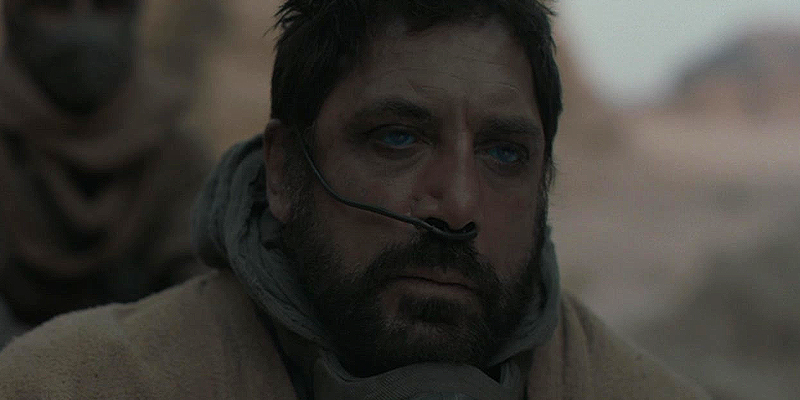

HOUSE FREMEN
Stilgar
Master of the Desert.
Stilgar will do anything to protect the life and culture of his people—guardians of the Arrakis deserts known as the Fremen. He is revered as a man of great wisdom, born of a deep symbiotic relationship with the wilds of Dune; a primal survivor who has made the most dangerous planet in the universe his home.
